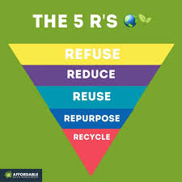

Meet Our Team

Isaac Awuni
A student researcher focusing on sustainable logistic waste management solutions and community development.
Civil Engineering, UENR

Nyantakye Robert
A student researcher passionate about logistics, technology integration, and innovative waste solutions.
Civil Engineering, UENR
Dr. Prince Antwi
Project Supervisor.
Lecturer, UENR